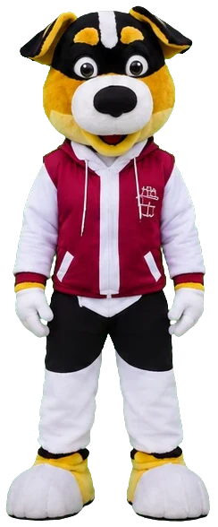
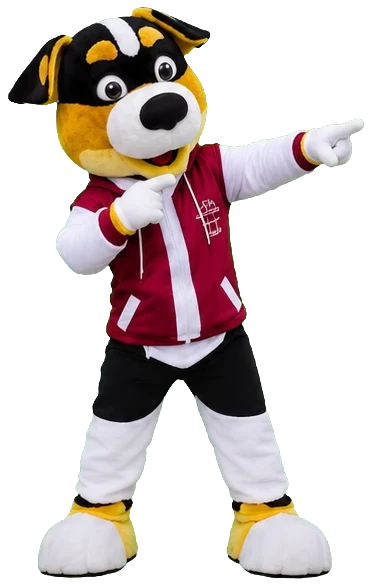
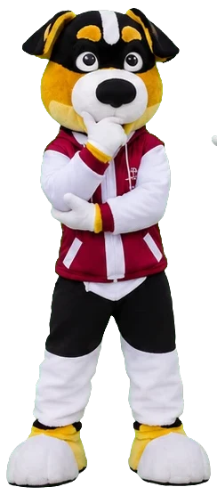

Manual de identidad · borrador v1
Lo que pasa en el campus, en tiempo real. Este manual fija marca, color, tipografía, forma, movimiento y voz. La interfaz sale de aquí: los valores de esta página son los de la app.
01 · Marca
El nombre siempre se escribe «ECI MyCampus». Tres rutas para rediseñar el logo; elige una y la afino. Las tres comparten la tipografía Sora y el rojo puro de la marca.
Solo palabra. Sobrio y fácil de usar en cualquier tamaño. «My» no se separa; todo «MyCampus» va en el color de marca.
El pin es el mapa y el radar; la E es el Bloque E, el edificio de la animación. Sirve como ícono de la app por sí solo.
Cuadrícula de ventanas con una «encendida» en oro: lo que está pasando ahora. Más abstracto, menos literal.

El logo de la Escuela va aparte y sin tocarse: no se recolorea, no se estira, no se pone dentro del logo de MyCampus. Lleva su propio espacio libre de la mitad de su altura. Si la Escuela tiene versión vectorial (SVG), conviene pedirla.
Contorno blanco con una luz que lo recorre cada 7 s. Es el recurso gráfico principal: pantallas de entrada, fondos de portada. Siempre en blanco sobre fondo oscuro; con «reducir movimiento» queda quieto.
Fondo oscuro de la paleta, logo en blanco y rojo puro.
Espacio libre alrededor igual a la altura de la «E».
Tamaño mínimo: 24 px de alto el pin; 96 px de ancho la palabra.
Cambiar los colores, rotar, estirar o añadir sombras.
Poner el logo sobre fotos sin oscurecer el fondo.
Escribirlo «Ecimycampus», «ECI-MyCampus» o «Eci MyCampus».
02 · Color
El rojo que ya tenía la app sigue siendo el principal. El logo va en rojo puro. El guinda del chaleco de Manchas es el color secundario para jugar con él (ilustración, mascota, fondos de apoyo) y el oro de su pelaje se usa muy poco. Todo lo demás es neutro oscuro para que el contenido (eventos, mapa) sea lo que destaque.
| Combinación | Razón | Resultado |
|---|
Por eso el rojo sólido es para fondos de botón con texto blanco, el rojo claro es el que se usa como texto sobre oscuro, y el rojo puro queda para el logo (4.25 : 1 sobre noche, suficiente para una marca grande, no para texto corrido).
90 % neutros · 8 % rojo · 2 % oro y verde. El guinda aparece con la mascota. Si todo es rojo, nada destaca.
Los nombres de los colores son por función (superficie, tinta), no por tono, para que el modo claro sea cambiar valores y no rediseñar.
03 · Tipografía
Dos familias. Sora (geométrica, con carácter técnico) para el logo y los títulos grandes. Inter para todo lo demás: es muy legible en pantallas pequeñas y trae tildes y «ñ» bien resueltas.
Máximo dos pesos por pantalla.
Cifras tabulares en horas, cupos y contadores.
Líneas de texto de 45 a 70 caracteres.
Sora en párrafos largos ni en botones.
Ambas se cargan con next/font, sin pedir nada a Google en el navegador y sin salto de texto al cargar.
04 · Espaciado y forma
Dentro de un grupo, 8–12. Entre grupos, 24–32. Entre secciones, 48–64.
Sin sombras: la profundidad la dan el color de superficie y el borde de 1 px.
Mínimo 44 × 44 px en todo lo que se toca. Barra inferior en celular a 56 px.
Contenido a 1080 px de ancho máximo, márgenes de 16 px en celular y 24 px en escritorio.
05 · Componentes
Una sola acción principal (rojo) por tarjeta o pantalla.
06 · Movimiento
Pulsar: 120–150 ms · Entrar/salir: 200–250 ms · Pantallas: 300 ms. Curva de salida suave cubic-bezier(0.23, 1, 0.32, 1).
Opacidad y desplazamiento corto. El botón se hunde al pulsarlo (escala 0.98). El punto «en vivo» late.
Nada decorativo en listas ni al teclear. Con «reducir movimiento», todo queda estático salvo cambios de estado.
07 · Manchas y voz
Aparece en el login, los estados vacíos, los errores y como avatar del asistente que resuelve dudas e información del campus. Habla en primera persona, con frases cortas.



| Saludo | Login, bienvenida |
| Señalando | Ayuda, guía al mapa |
| Celebrando | Inscripción lograda |
| Pensando | Buscando, cargando |
| Duda | Error, sin resultados |
| Cabeza | Avatar del asistente |
Primera persona y tuteo: «Te guardé un cupo».
Frases de 12 palabras o menos. Dice qué pasó y qué sigue.
Cálido y claro; el humor, poco y nunca en un error grave.
Culpar a la persona: «Ingresaste mal la clave».
Prometer lo que no sabe: si no tiene el dato, lo dice y ofrece a quién preguntar.
| En vez de | Manchas dice |
|---|---|
| Error 409 | Ya estás inscrito en este evento. |
| Sin resultados | No encontré nada con eso. ¿Probamos otra búsqueda? |
| Cupo agotado | Se llenó. Te aviso si se libera un cupo. |
Nota de producto: el asistente necesita un servicio de IA en el backend con los datos reales del campus. Hoy no existe; por ahora Manchas solo es la cara y la voz de los mensajes de la app.